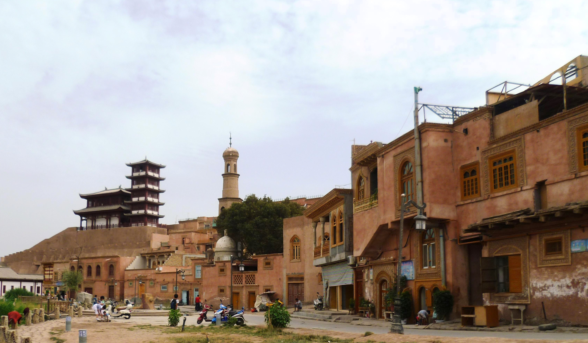

Узбекская диаспора в Китае (Восточный Туркестан): как она сложилась
Узбеки Китая — небольшая, но древняя община, веками жившая в Синьцзяне (Восточном Туркестане). Большинство — потомки купцов, пришедших по Великому шёлковому пути из Бухары, Коканда, Андижана и Самарканда. Община начала оседать в городах Синьцзяна с XVI века и выросла после XVIII века. Сегодня это один из 56 официально признанных народов Китая: по переписи 2020 года — 12 742 человека. Только по проверенным фактам.

Узбеки Китая — одна из старейших, но самых малочисленных узбекских общин за пределами Центральной Азии. Их история связана прежде всего с торговлей по Великому шёлковому пути: купцы из центральноазиатских городов — Бухары, Коканда, Андижана, Самарканда и Ферганской долины — оседали в городах нынешнего Синьцзян-Уйгурского автономного района (исторического Восточного Туркестана). Ниже формирование общины изложено строго по фактам, на основе проверенной истории и официальных данных переписей.
Происхождение: купцы Шёлкового пути
Большинство узбеков в Китае — потомки купцов, ходивших по Шёлковому пути. Торговцы из центральноазиатских городов — Бухары, Коканда, Андижана и Самарканда — вели дела в Кашгаре, Гулдже (Инин) и других городах. В ту эпоху центральноазиатских купцов в Восточном Туркестане часто собирательно называли «андижанцами».
Когда они осели
По историческим данным, узбеки начали оседать в городах Синьцзяна с XVI века. После XVIII века, с региональными политическими переменами и оживлением торговых путей, их число выросло. Поскольку большинство занималось городской торговлей и ремёслами, а не земледелием или скотоводством, община сосредоточилась в городах.
Где они живут
Узбеки Китая живут в основном в Синьцзян-Уйгурском автономном районе. Крупнейшие общины — в Гулдже (Инин) и Илийской долине, а также в Кашгаре, Яркенде (Шаче), Урумчи и Тачэне (Тарбагатай). Данангоуская узбекская национальная волость в Чанцзи-Хуэйском автономном округе — единственная в Китае административная единица, официально выделенная для узбеков.
Численность: переписи
Переписи Китая показывают небольшую и устойчивую общину: около 13 626 человек в 1953 году, 7 717 в 1964-м и 13 810 в 1982-м. По национальной переписи 2020 года узбеков Китая — 12 742 человека, менее 0,001% всего населения Китая.
Официально признанный народ
Узбеки — один из 56 народов, официально признанных Китайской Народной Республикой. Этот статус позволяет общине сохранять язык и обычаи, иметь национальную административную единицу (например, Данангоускую волость) и отдельно учитываться в официальной статистике.
Язык и религия
Узбеки Китая говорят на узбекском — тюркском языке. При этом живущие в южном Синьцзяне нередко говорят и на уйгурском из-за близости к уйгурским общинам, а в северных, скотоводческих районах — также на казахском. Их религия — суннитский ислам (ханафитский мазхаб), что роднит их по вере с узбеками Центральной Азии.
Торговое наследие
Историческая идентичность общины определяется торговлей: узбеки держали торговые дома и караван-сараи в городах Восточного Туркестана и были посредниками в торговле между Центральной Азией и Китаем. Поэтому узбеки Китая остались преимущественно городским населением, а их культура близка к городским торговым традициям Центральной Азии.